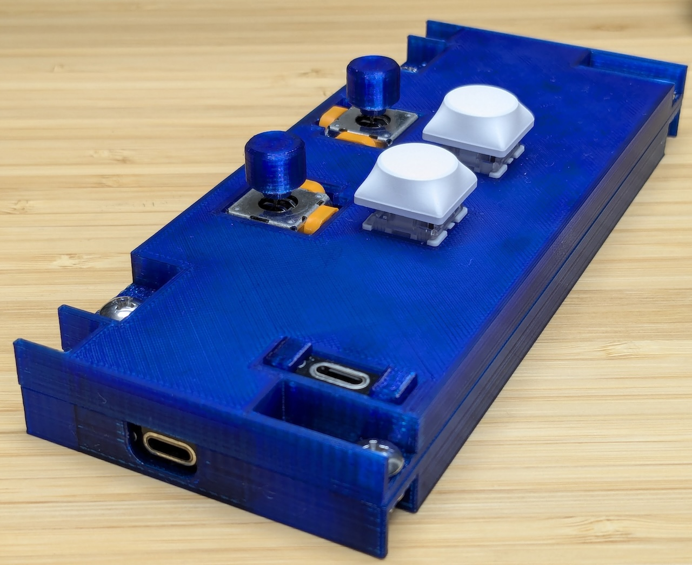
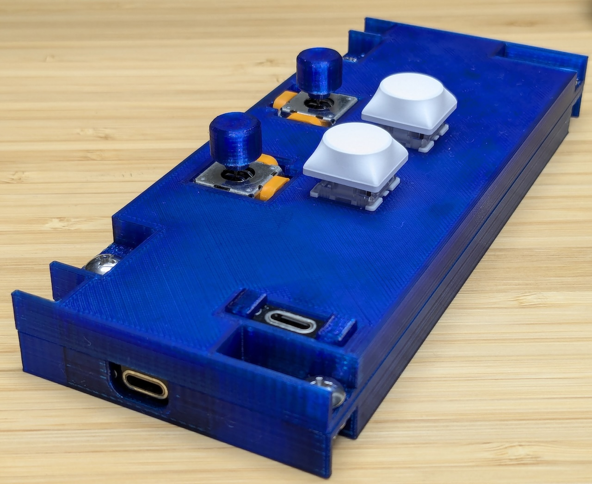
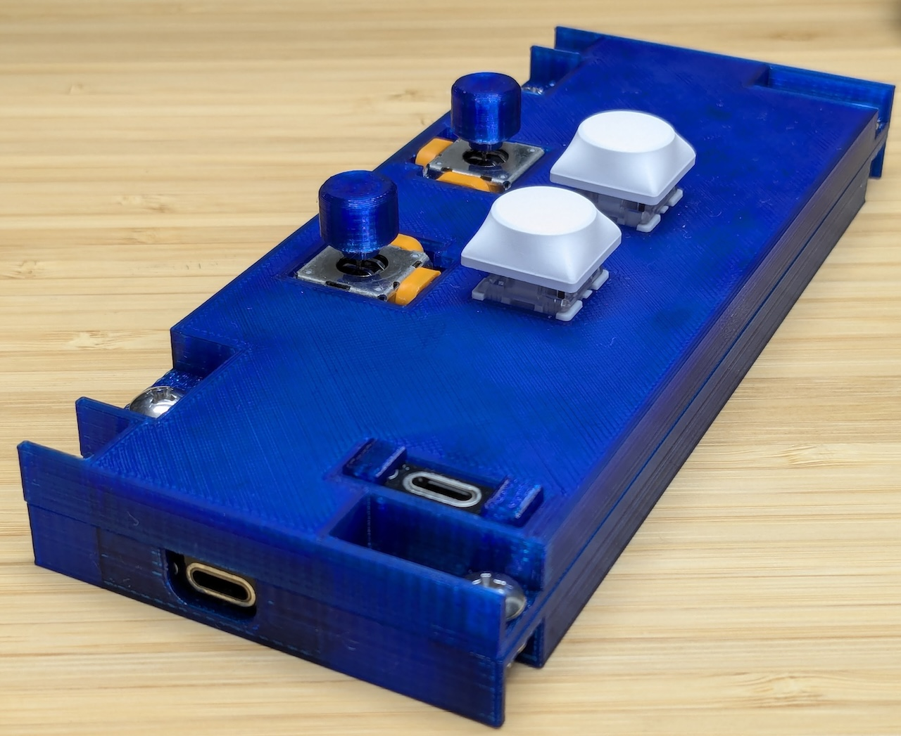
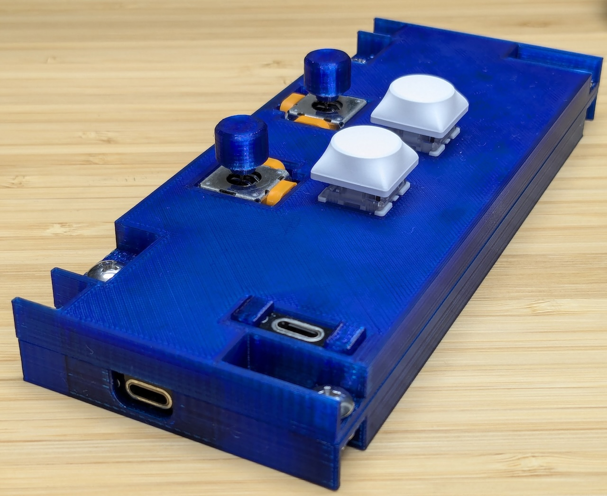

 

Mouse cursor movement begins by tilting the left stick. While only the left stick is used, the pointer moves slowly.
If you tilt the right stick while the left stick is sufficiently tilted, the pointer accelerates. The right stick doesn't influence the direction of the pointer's movement, so you can tilt it in whatever direction is easiest for you.
Tilting the right stick first, as opposed to the pointer control, initiates a scrolling action.